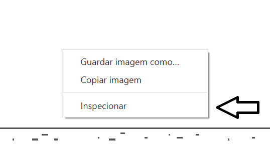
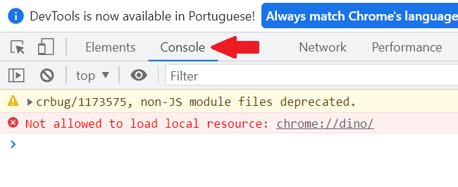
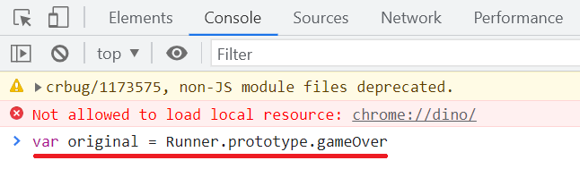
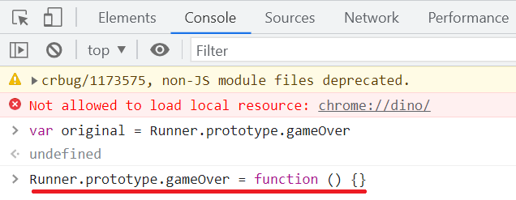
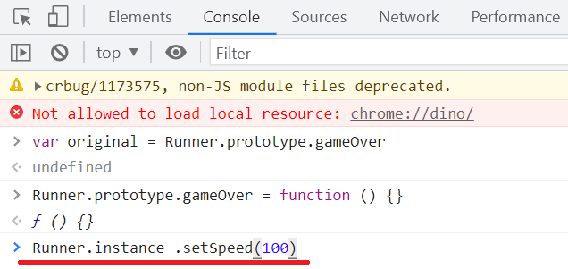

T-Rex Game
O T-Rex Game foi criado em 2014, pela Google, para manter pessoas intretidas ao estarem Offline da internet
Hoje, iremos ver como "Hacker" o jogo, pra você mostrar seus pontos pro seu amiguinho e chamar ele de noob
Hackeando o Dino
Imortal
- Primeiramente, acesse o site: chrome://dino
- Clique com o botão direito na tela, e clique em "inspecionar" 
- Depois, vá para aba "Console" 
- Em seguida, digite: var original = Runner.prototype.gameOver
(Isso irá nos abrir a porta para fuçar no Dino)>

- Ainda na mesma tela, digite: Runner.prototype.gameOver = function () {} 
- Sendo direto, isso irá deixar o Dino Imortal
- Ainda não saia do console, poderemos adicionar mais trapaças, como vou mostrar a seguir
Super Velocidade
- Ainda em Console, digite: Runner.instance_.setSpeed(100) 
- Isso irá deixar o nosso querido Dino mais rápido (na verdade, muito mais rápido)